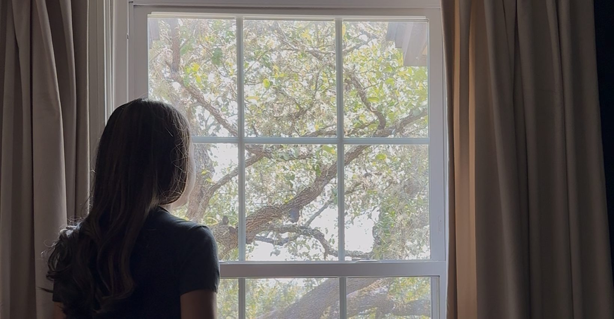

A private one-week space for pregnancy and infant loss
Join the private groupHosted in a private Facebook group · Only members can see posts
Some stories don’t stop mattering
just because they stop being visible.
For one week in October, I’m opening a private space for women who want somewhere for that story to be witnessed.
If you carry it as a loss, you belong here.
Or a name. A memory. A date. One sentence.
You can also simply be present and read.
Quiet participation counts.
Nothing has to become a lesson here.
Nothing has to be explained well enough to count.
Gentle prompts for anyone who wants them.
An optional closing gathering on Google Meet.
No pressure to participate in any particular way.
You don’t have to prove that it mattered.
You don’t have to explain why you still carry it.
It mattered because
it mattered to you.